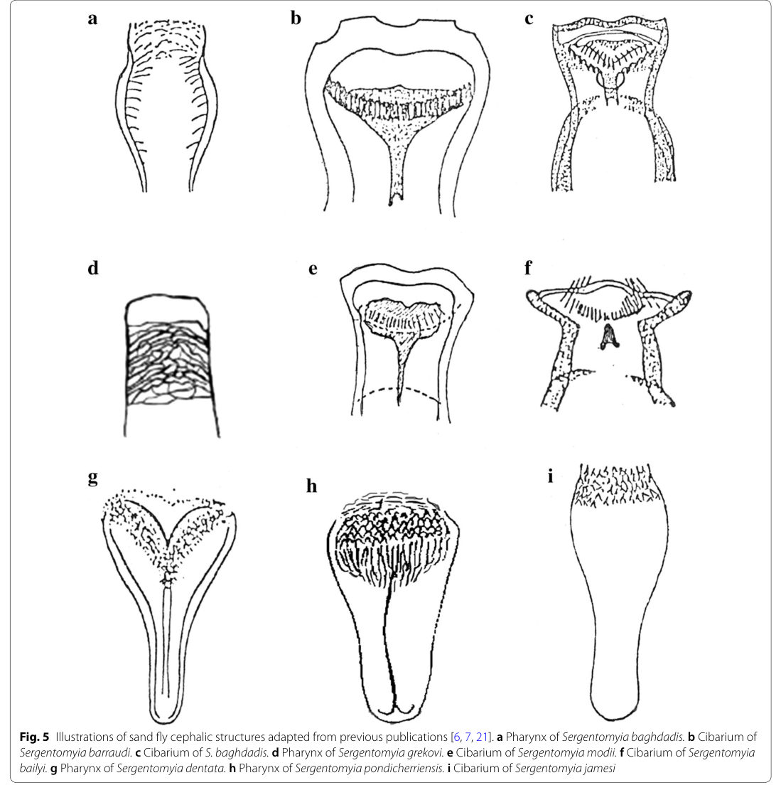

Species › Sergentomyia › Parrotomyia
Sergentomyia bailyi
| Classification | Genus Sergentomyia, subgenus Parrotomyia |
|---|---|
| Status | valid |
| Distribution | Records in the project regions: Cambodia, China, India, Laos, Pakistan, Sri Lanka, Thailand, Vietnam (Galati et al. 2025) | Cambodia (Prasetyo et al. 2026) | Southern Vietnam (Nguyen et al. 2024) | Laos: Luangnamtha, Luangphabang, Vientiane Capital, Vientiane province (Vongphayloth et al. 2026, Table 2) | Sri Lanka: specimens referred to the University of Kelaniya in 2024 from Gampaha, Galle and Anuradhapura districts (districts per species not given), n=4 (6.9%) of 58 examined (Kumari et al. 2026) |
| Thailand | Phetchaburi (Quate 1962) | Thailand (Galati et al. 2025) | Chumphon, Uthaithani, Lopburi (Polseela et al. 2024); listed in the 42-species Thai checklist (Soe et al. 2026, Table 3) | Surat Thani (Wat Tham Khuha Cave): 1 female, identified by DNA barcoding (Klaiklueng et al. 2025, Tables 1-2) |
| Importance | Suspected vector of Chandipura virus (cited in Wijerathna & Gunathilaka 2020). |
| Diagnostic notes | Galati et al. 2025 (p. 35) list it as Sergentomyia bailyi (Sinton, 1931) (Sergentomyia incertae sedis). | Female: pigmented area absent or a very small square spot; numerous small fine teeth in several rows, sometimes impossible to see even with phase contrast; pharynx with curved transverse ridges bearing small short teeth, anterior part narrow; spermathecae smooth with narrow duct (Prasetyo et al. 2026). High COI divergence in Vietnamese material may indicate cryptic species (Nguyen et al. 2024). | S. bailyi s.l. may represent a species group (Vu et al. 2021, cited in Vongphayloth et al. 2026). |
| Sources | Lewis 1978, Quate 1962, Wijerathna & Gunathilaka 2020, Galati et al. 2025, Prasetyo et al. 2026, Nguyen et al. 2024, Polseela et al. 2024, Soe et al. 2026, Vongphayloth et al. 2026, Kumari et al. 2026, Klaiklueng et al. 2025 |
⚠ Conflicting characters
| Character | Source A | Source B | Type | Comment |
|---|---|---|---|---|
| Subgenus | Lewis 1978: Parrotomyia | Galati et al. 2025: Sergentomyia incertae sedis (pp. 35-36) | different interpretation |
How it keys out
The chain of characters leading to this taxon in each key (a ready-made diagnosis).
Oriental Phlebotominae: species and subspecies (Lewis 1978) – couplet 157b
- 1b Cibarial teeth in a transverse row (Fig. 65), fore teeth sometimes present (Figs 136, 245) and usually pointing upward. Pigment patch (Figs 66, 136) usually present. Hind ends of abdominal tergites 2-6 usually with all or most hairs recumbent, most sockets much smaller than on 1 except in S. musai. Style of ♂ with four major spines and an accessory seta (Fig. 80) ⚠
- 48b Abdominal tergites 2-6 with few or no erect hairs
- 49b Abdominal tergites 2-6 usually with no erect hairs. Spermatheca not segmented but sometimes striated or wrinkled
- 63b Spermatheca elongate and usually without spicules
- 64b Without this combination. Spermatheca usually not tubular
- 69b Without this combination
- 110b Without this combination
- 155a Cibarium of ♀ with one or more rows of small, sometimes scarcely visible, hind teeth. Spermatheca smooth, an elliptical or cylindrical capsule. Aedeagus pointed and paramere hooked. Style with all spines terminal or two of them subterminal
- 156a Female
- 157b Hind end of pharynx without such spicules. Cornua divergent ⚠
Oriental Phlebotominae: species and subspecies (Lewis 1978) – couplet 158a
- 1b Cibarial teeth in a transverse row (Fig. 65), fore teeth sometimes present (Figs 136, 245) and usually pointing upward. Pigment patch (Figs 66, 136) usually present. Hind ends of abdominal tergites 2-6 usually with all or most hairs recumbent, most sockets much smaller than on 1 except in S. musai. Style of ♂ with four major spines and an accessory seta (Fig. 80) ⚠
- 48b Abdominal tergites 2-6 with few or no erect hairs
- 49b Abdominal tergites 2-6 usually with no erect hairs. Spermatheca not segmented but sometimes striated or wrinkled
- 63b Spermatheca elongate and usually without spicules
- 64b Without this combination. Spermatheca usually not tubular
- 69b Without this combination
- 110b Without this combination
- 155a Cibarium of ♀ with one or more rows of small, sometimes scarcely visible, hind teeth. Spermatheca smooth, an elliptical or cylindrical capsule. Aedeagus pointed and paramere hooked. Style with all spines terminal or two of them subterminal
- 156b Male
- 158a Cibarium with multiple row of teeth ⚠
Indo-Chinese species (Thailand to Viet Nam) (Quate 1962) – couplet 10a
- 1b Abdominal hairs on tergites 2 to 6 recumbent, sockets much smaller than on tergite 1; palpal segment 4 longer than 1/2 length of 3; ♂ dististyle with all spines distad of center (except sylvestris and khawi); pharynx armed or unarmed; cibarium of ♀ usually with well developed teeth ⚠
- 4a R2+3 (beta) subequal to or longer than R2 (alpha); delta 1/2 or less length of R2
- 5a Males
- 6b Dististyle with all spines apical or subapical, coxite not elongate; antennal segment 3 shorter than or not greatly exceeding proboscis
- 8a Antennal segment 3 ends before proboscis tip
- 9a Paramere ends in down-curved, pointed apex; pharynx slender and sides nearly straight, unarmed; Newstead scales on palpal segment 3 only; ridge bearing cibarial teeth concave (curvature opposite that of pigment patch)
- 10a Accessory spine of dististyle on about same level as subapical spine; basistyle with many (more than 20) non-deciduous hairs; sides of cibarium suddenly expanded posteriorly to nearly form a right angle ⚠
Indo-Chinese species (Thailand to Viet Nam) (Quate 1962) – couplet 16a
- 1b Abdominal hairs on tergites 2 to 6 recumbent, sockets much smaller than on tergite 1; palpal segment 4 longer than 1/2 length of 3; ♂ dististyle with all spines distad of center (except sylvestris and khawi); pharynx armed or unarmed; cibarium of ♀ usually with well developed teeth ⚠
- 4a R2+3 (beta) subequal to or longer than R2 (alpha); delta 1/2 or less length of R2
- 5b Females
- 13b Pharynx unarmed
- 15a Antennal segment 3 ending well before proboscis tip
- 16a Palpal formula 1-2-3-4-5, rarely 1-2-(3-4)-5; antennal segment 3 very short, extending only to about center of proboscis; cibarium with irregular double row of small, faint teeth ⚠
Sri Lanka: females (Wijerathna & Gunathilaka 2020) – couplet S9b
- G1b Wings narrow, lanceolate, symmetrical along the length (Fig. 1e). Cibarium with one or more rows of teeth, pigment patch usually present (Fig. 1c) ⚠
- S1a Spermatheca with capsule (Fig. 4b, c), not tubular
- S2b Capsule of spermatheca smooth
- S4b Pharynx with fine spicules or none (Fig. 5a)
- S7b Cibarium without a deep notch
- S8b Pharynx without scales
- S9b Cibarial pigment patch small or absent (Fig. 5f); pharynx with spiculate ridges ⚠
Figures

